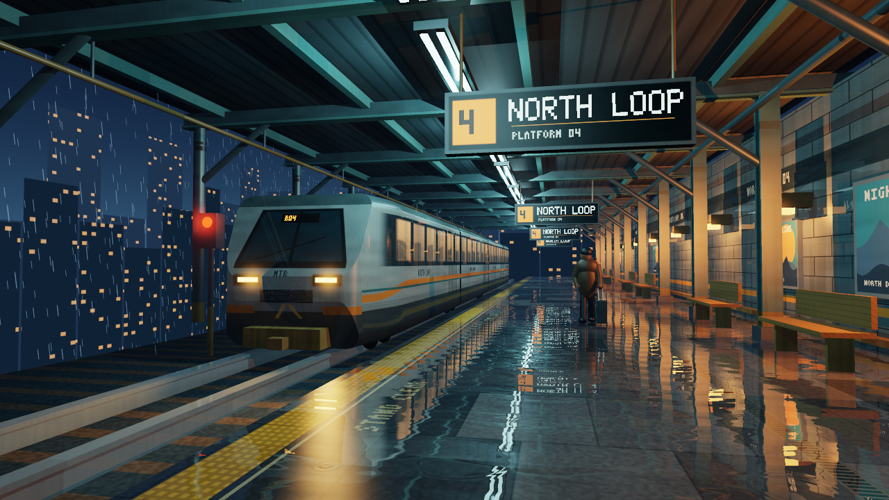

Night Shift
Browse all four CUDA scenes here. The course map introduces each one when you have the tools to edit its kernel and measure the result.
After the last train
RTX 3070 capture

Read the destination sign in the puddle, then follow the strip lights toward the end of the platform.
Drag the divider, or focus it and use the arrow keys. Both frames share the same camera, time, and exposure.
After Week 4, Day 3 · 75 minutes
Here for a capture? Compare the views named in your lesson, then switch back to that tab. The tracked scene session gives the steps for editing and measuring this kernel.
Scene exercise preview
Cull a whole platform bay
Can you skip an entire group of beams, signs, and lights and keep every pixel of the reflection?
Read lighting.cuhReveal the kernel hint
python -B labs/nightshift/nightshift.py --scene lighting --checkFor live FPS, camera controls, and CUDA edits, double-click Start Night Shift.cmd in the course folder on Windows.
Course notebook